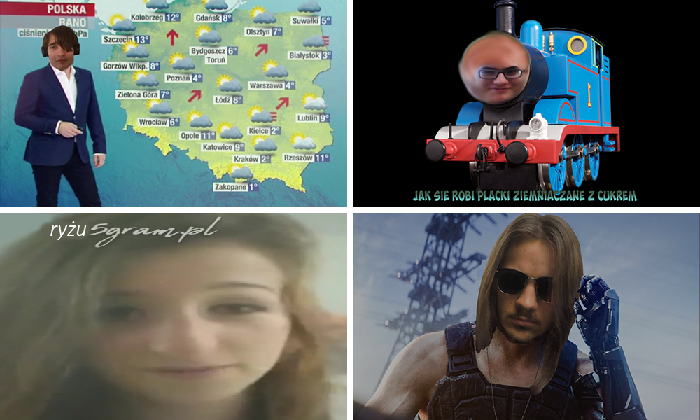

O nas
Jesteśmy grupą projektową z klasy II Ti, o nazwie Kopytko A.
Nasza nazwa wywodzi się od uwielbianej przez nas potrawy jaką są kopytka.
W skład naszej drużyny wchodzą:
Od lewej strony w pierwszym rzędzie:
Aleks "Chwast" Bońkowski
Kacper "Papcer" Łukaszewski
a w drugim:
Wiktor "Witold" Krysiński
i Michał "Prezydent" Młynarczyk

Jednak oprócz naszej miłości do kopytek, każdy z nas posiada różne zainteresowania w zakresie informatyki,
od zamiłowania do podzespołów komputerowych przez tworzenie stron internetowych do pisania gier, programów czy innych skryptów.